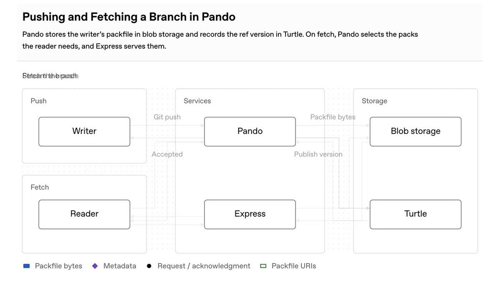

AI och tech
Delvis obekräftatOpenAI bygger egen Git-motor när AI-agenterna kör slut på servrarna – Pando kan bli tillgänglig för andra

OpenAI har byggt Pando, en ny lagringsmotor bakom bolagets stora gemensamma kodförråd som fortfarande fungerar som vanlig Git utåt. Den behövdes eftersom ingenjörer och bolagets egna Codex-agenter nu skickar och hämtar kod i en takt som det gamla systemet inte klarade. Enligt OpenAI har tiden för att skicka upp kod minskat med omkring 80 procent, och Pando hanterar nära en petabyte Git-data om dagen. Greg Brockman säger att bolaget funderar på att erbjuda systemet till andra.
När AI-agenter börjar skriva kod i stor skala är det inte bara människorna som får mer att göra. Även systemen som lagrar koden belastas. Det är bakgrunden till Pando, en ny lagringsmotor som OpenAI har byggt för det stora gemensamma kodförråd, ett så kallat monorepo, där bolagets kod finns. Enligt OpenAI:s eget inlägg behövdes den för att hantera fler uppladdningar och hämtningar från både ingenjörer och bolagets kodagenter Codex, utan att någon behövde ändra hur de arbetar med Git, det versionshanteringsverktyg som nästan alla programmerare använder.
Resultatet är enligt OpenAI att väntetiden när man skickar upp kod har minskat med omkring 80 procent, och att Pando nu hanterar nära en petabyte, alltså tusen terabyte, Git-data om dagen. Enligt återgivningar av OpenAI:s tekniska genomgång, bland annat hos explainx.ai, blev medianväntetiden nästan fem gånger kortare.
"Den svåra vägen"
Många stora teknikbolag har lämnat Git för egna system när kodmängden blivit för stor. OpenAI har valt att behålla Git utåt och bygga om det som finns bakom. Bolagets ordförande Greg Brockman skriver att de "took the hard road of continuing to use Git", och att de nu överväger att göra Pando tillgängligt även för andra. Det är en uppgift som fått många att spekulera i en ny produkt, men något sådant är inte beslutat.
Enligt X:s sammanställning har antalet incheckningar i kodförrådet ökat med över 1 300 procent sedan början av 2024. Systemet ska ha skrivits i programspråket Rust på omkring tio veckor med hjälp av AI, och 99 procent av förfrågningarna ska kunna besvaras direkt från en snabb mellanlagring. OpenAI har också skickat tillbaka rättningar till själva Git-projektet. De uppgifterna har vi inte kunnat kontrollera i OpenAI:s eget blogginlägg.
Agenterna ändrar kraven
Ingenjören LLMpsycho, som arbetar med AI-agenter, lyfter en detalj ur OpenAI:s tekniska genomgång: tillförlitligheten för kodförrådet låg tidvis under 90 procent innan Pando. Enligt X:s sammanställning bygger lösningen på att varje gren hålls konsekvent för sig, i stället för att hela förrådet måste vara i takt samtidigt.
Pando har fått stor uppmärksamhet bland utvecklare och AI-arkitekter, bland andra v_shakthi, Zen_with_AI, Hislordship_9, AIpointing och ApollonVisual. Den gemensamma tråden är att AI-agenterna inte bara ändrar hur kod skrivs, utan också vad systemen runt koden måste klara av.
Så vet vi det
Källmix: 10 källor – 2 primärkälla, 3 expert, 3 analys, 2 debattör. Etablerad media utgör 0 av 10.
- Primärkälla OpenAI: Pando, 80 procent kortare väntetid och nära en petabyte Git-data om dagen
- Primärkälla Greg Brockman, OpenAI:s ordförande: "took the hard road of continuing to use Git"
- Expert LLMpsycho, senior ingenjör för AI-agenter: tillförlitligheten låg tidvis under 90 procent
- Expert v_shakthi, AI-arkitekt på företagssidan, om Pando
- Expert Zen_with_AI, kinesiskspråkig AI-arkitekt i Silicon Valley, om Pando
- Analys explainx.ai: genomgång av Pando
- Analys ApollonVisual om Pando och Codex-agenterna
- Debattör Hislordship_9 om Pando
- Debattör AIpointing om Pando
- Analys X:s sammanställning av diskussionen
Prestandasiffrorna (omkring 80 procent kortare väntetid och nära en petabyte data per dag) kommer från OpenAI:s eget inlägg och har inte granskats av någon utomstående. Uppgifterna om att antalet incheckningar ökat med över 1 300 procent sedan början av 2024, att systemet skrevs i Rust på omkring tio veckor med hjälp av AI och att 99 procent av förfrågningarna besvaras från cache bygger på X:s sammanställning och på analyskonton som läst OpenAI:s tekniska blogginlägg; vi har inte läst inlägget i sin helhet. Att kodförrådets tillförlitlighet tidvis låg under 90 procent och att medianväntetiden blev nästan fem gånger kortare kommer från konton som återger blogginlägget.
Fördjupa
Frågorna öppnar Grok i en ny flik med artikeln som underlag. AI-svar kan innehålla fel, så kontrollera mot källorna.
- Vad är ett monorepo, och varför samlar stora bolag all sin kod på ett ställe? ↗
- Varför belastar AI-agenter som Codex kodförråden så mycket mer än människor? ↗
- Vad innebär det att Pando är Git-kompatibelt, och varför valde OpenAI att inte byta bort Git? ↗
- Hur har Google och Meta löst samma problem? ↗
- Vad skulle det betyda om OpenAI börjar sälja Pando till andra företag? ↗
- Är siffrorna om 80 procent kortare väntetid jämförbara med andra system? ↗
Läs vidare
Uppdateringslogg
- 16:20 – Artikeln publicerad.